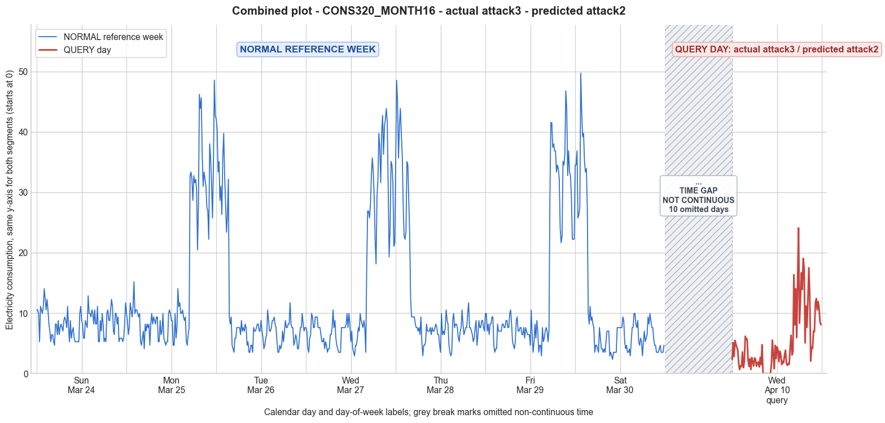

CONS320_MONTH16 · actual attack3 · predicted attack2
- Pair
- CONS320_MONTH16
- GT
- attack3
- Prediction
- attack2
- Binary GT
- attacked
- Binary Prediction
- attacked
- Source
- E010
- Parse
- stored
- Date
- 2013-04-10
- Weekday
- Wednesday
- Latency
- 1.89 min
- Tokens
- 9315

Final output
Classification: - Manipulated Identified Attack: - Most Likely: Attack 2 - Confidence: High - Reasoning: The query day shows a single contiguous block of exactly zero values lasting approximately 2 hours (8 consecutive 15‑minute intervals) during the morning, while the rest of the day retains a reduced but non‑zero consumption pattern generally resembling the shape of the reference Wednesday (low night, moderate morning, evening peak). This is the hallmark of Attack 2, where consumption is selectively replaced with zeros for a random duration. Attack IEEE was considered but would cause scattered, randomly placed zero intervals across the entire day rather than a single uninterrupted zero block. Attack 4 was also considered but specifies a general reduction over a period, not an explicit zeroing, and would likely preserve some above‑zero consumption during the attack window. Attack_Behavior_Explanation: - How consumption values are manipulated relative to the normal week: The attacker zeroes out all meter readings for a random period (in this case, from approximately 08:15 to 10:00). Outside this window the actual consumption is either left unchanged or possibly slightly reduced, but the core manipulation is the insertion of a flat zero segment. - Impact on magnitude and trend: Magnitude is significantly lower (daily mean drops from ~10‑15 to 5.17), and the natural morning ramp‑up trend is disrupted by the sudden drop to zero and subsequent return to moderate consumption, creating an abnormal “on‑off” signature. - Possible technical causes: Full meter bypass, false data injection, or reverse current that allows the meter to stop recording for a limited period.
Prompt
You are a domain expert in smart grid security and electricity theft analysis, with deep knowledge of non-technical loss (NTL) attack patterns in smart meters. You are given: 1. A plot of one week of original (normal) energy consumption for a smart meter, provided as context for the customer's typical consumption behavior. 2. A plot of one day of energy consumption for the same smart meter, which may or may not be manipulated. Below are common attack types, each defined by how consumption values are altered, their impact on magnitude and trend, and their possible technical causes. Attack 0: Generated by replacing all electricity consumption samples with zero values for the entire observation duration. Simulates a scenario where no energy usage is reported at all. May be caused by a total meter bypass or severe meter malfunction. Completely eliminates both the trend and magnitude of the consumption profile. Attack 1: Multiplies the actual energy consumption by a constant random value between (0,1). The lower the factor, the higher the severity. Can be triggered by meter bypass, magnetic interference, reverse current, and false data injection. The consumption trend remains the same but the magnitude is uniformly reduced. Attack 2: Generated by replacing consumption samples with zeros for a random duration. Also known as an on-off attack. Can be caused by full meter bypass, false data injection, and reverse current. Changes both the trend and amplitude. Attack 3: The actual consumption is multiplied by different random factors between 0 and 1, with a unique factor per sample. Similar to Attack 1 but the scaling factor varies per reading. Caused by meter bypass, magnetic interference, and reverse current. Changes both the trend and amplitude. Attack 4: Simulates energy theft over a randomly selected period within the observation window. All measurements in that period are reduced. Caused by meter bypass, magnetic interference, reverse current, and false data injection. Changes both the trend and amplitude. Attack 5: Each sample is replaced by a false value obtained by multiplying the average normal consumption by a random variable between 0 and 1, with a different variable per sample. Caused by false data injection. Produces a completely different pattern from the original consumption profile, changing both trend and magnitude. Attack 6: A random cut-off point is selected and all consumption values above it are replaced by that cut-off value. The attacker avoids exceeding a predefined maximum limit. Mainly caused by false data injection. Changes both the trend and amplitude. Attack 7: A random cut-off point is subtracted from each sample; if the result is negative, zero is reported. Similar to Attack 6 but replaces exceeding values with zero instead of the cut-off point. May be caused by false data injection or total meter bypass. Does not change the trend but reduces overall consumption. Attack 9: All samples are replaced by the average daily energy consumption, resulting in a flat constant profile. Easily detectable because constant consumption does not reflect normal customer behavior. Caused by false data injection. Eliminates all trends. Attack 10: Reverses the consumption pattern without reducing the total amount. Applicable when the electricity company uses time-varying pricing, allowing the attacker to shift high consumption to off-peak periods. Caused by false data injection. Changes the trend without decreasing total consumption. Attack 12: The attacker replaces their consumption pattern with that of a lower-consuming user. The legitimate user unknowingly pays the adversary's electricity bill. Caused by false data injection. Attack IEEE: For each 15-minute interval across the entire day, the consumer either reports the actual electricity consumption or substitutes it with zero. The result is a profile where some intervals reflect real consumption while others are zeroed out, creating an irregular pattern across the full day. May be caused by false data injection. Changes both the trend and amplitude. Given the two plots, determine: 1. Whether the day is attacked or original - compare the flagged day against the normal week and assess whether the consumption pattern is consistent with normal behavior or shows signs of manipulation. If the day is consistent with the customer's typical consumption behavior, classify it as original and provide no further analysis. If manipulation is detected, proceed to point 2. 2. Which attack type this most likely is - identify the single most probable attack and justify your choice based on how the flagged day deviates from the normal week. 3. The behavior of the identified attack - explain how the consumption values are manipulated, their impact on magnitude and trend, and the possible technical causes behind this type of attack. Output Format: Classification: - Original | Manipulated Identified Attack: (fill only if manipulated) - Most Likely: Attack X - Confidence: High | Medium | Low - Reasoning: Why it matches Attack X and why Attack Y and Attack Z were ruled out (list top 2 alternatives considered) Attack_Behavior_Explanation: (fill only if manipulated) - How consumption values are manipulated relative to the normal week - Impact on magnitude and trend - Possible technical causes
Reasoning content
We are asked to analyze a smart meter's consumption data. We have a reference week (7 days, each with 96 15-min readings) and a query day (also 96 readings). The query day is DAY_ID=3, but note that the reference week also has a Day 3 (which is the 4th day in the list, index 3). However, the query day's date is 2013-04-10, cal_month=4, dow=2 (Wednesday), dom=17. The reference week days are in March (cal_month=3), with Day 3 being dow=2 (Tuesday?) Actually, reference Day 0: dow=6 (Sunday?), Day 1: dow=0 (Monday), Day 2: dow=1 (Tuesday), Day 3: dow=2 (Wednesday). So reference Day 3 is a Wednesday in March. Query day is also a Wednesday (dow=2) but in April, with a different dom. So it's a different week. The per-day statistics: reference week days have means 8.24, 15.60, 10.52, 14.60, 11.74, 14.27, 10.08. Query day has mean=5.17, min=0.00, max=24.11, std=5.11. The query day has a much lower mean than all reference days. Also, the minimum is 0.00, which never appears in the reference week (the lowest min across all reference days is 2.34, most are around 2.93-4.68). So zero values are a clear anomaly. The max is 24.11, which is lower than many reference days' max (which reach up to 49.74). So the magnitude is reduced overall. Now, let's examine the query day's 96 readings. I'll list them in blocks for clarity (each block is perhaps an hour? 4 readings per hour). Query day values: 2.28, 5.14, 2.82, 5.49, 4.85, 4.32, 3.85, 1.58, 0.66, 1.28, 1.20, 3.57, 0.96, 1.98, 6.18, 5.68, 5.69, 2.27, 1.17, 2.43, 0.67, 2.65, 1.94, 1.24, 2.58, 2.35, 1.23, 1.76, 1.92, 1.10, 2.68, 1.47, 4.76, 0.00, 0.00, 0.00, 0.00, 0.00, 0.00, 0.00, 0.00, 0.00, 1.63, 5.53, 3.12, 0.79, 4.66, 2.49, 4.43, 3.88, 1.95, 3.70, 3.10, 1.48, 2.01, 1.77, 3.03, 3.86, 1.79, 1.35, 1.62, 1.52, 4.30, 6.32, 3.07, 3.63, 16.36, 8.05, 14.04, 5.95, 15.05, 24.11, 8.34, 12.12, 16.68, 13.92, 19.04, 17.37, 5.07, 11.18, 7.65, 11.99, 17.51, 12.88, 2.05, 4.37, 4.14, 7.01, 6.93, 11.71, 12.40, 10.54, 11.91, 10.77, 8.49, 8.09 Looking at the reference week Day 3 (which is also a Wednesday, but in March), its values: Reference Day 3: 7.61, 7.02, 4.10, 3.51, 5.85, 6.44, 9.95, 9.36, 7.61, 7.61, 9.36, 9.36, 9.36, 7.61, 7.61, 7.61, 6.44, 5.27, 5.27, 5.85, 4.10, 5.27, 4.68, 3.51, 4.10, 4.10, 6.44, 6.44, 7.61, 10.53, 7.61, 8.78, 5.85, 4.68, 4.10, 3.51, 3.51, 3.51, 7.61, 7.61, 7.61, 7.61, 7.61, 8.19, 9.95, 7.61, 9.95, 8.19, 5.27, 7.02, 4.10, 3.51, 2.93, 4.68, 4.68, 5.85, 7.61, 7.02, 9.95, 8.78, 8.19, 7.61, 8.78, 7.61, 3.51, 17.55, 26.92, 26.92, 25.75, 28.09, 32.77, 35.69, 33.35, 29.26, 22.24, 18.14, 29.26, 32.18, 39.79, 37.45, 31.60, 39.79, 42.72, 36.28, 40.96, 42.13, 43.89, 41.54, 30.43, 19.31, 23.99, 35.11, 34.52, 31.60, 21.06, 21.65 Reference Day 3 has a clear pattern: nighttime low, morning moderate, then a huge spike in the evening (around 6pm to 11pm) reaching up to 43.89, with a very high consumption block. The query day shows a much flatter pattern, with a small morning spike, a long period of zeros, and then an evening increase but much lower peak (max 24.11). The zero values are very prominent: from reading index around 33 to 41? Let's count indices: I see "4.76, 0.00, 0.00, 0.00, 0.00, 0.00, 0.00, 0.00, 0.00, 0.00, 1.63" so that's 8 zeros after 4.76. Actually: ... 2.68, 1.47, 4.76, 0.00, 0.00, 0.00, 0.00, 0.00, 0.00, 0.00, 0.00, 0.00, 1.63... Wait, I count: after 4.76, there are 8 zeros? Let's count from the values: Position (1-indexed): ... 32: 1.47 33: 4.76 34: 0.00 35: 0.00 36: 0.00 37: 0.00 38: 0.00 39: 0.00 40: 0.00 41: 0.00 42: 1.63 So there are exactly 8 zeros, from index 34 to 41 inclusive. That's 8*15 = 2 hours of zeros. The pattern shows several zeros; there are also some near-zero values before and after. This looks like an on-off attack where consumption is zeroed for a random duration. That matches Attack 2: "Generated by replacing consumption samples with zeros for a random duration." Let's check other possibilities. Attack 0: all zero - not the case, many non-zero readings. Attack 1: multiply by constant random factor between 0 and 1. The pattern of the query day seems somewhat similar to the reference day but with zeros inserted. However, the zeros are not just scaling, they are absolute zeros. Scaling would not produce exact zeros unless the original was also zero, but original min is 2.93, so scaling wouldn't give zero. So not Attack 1. Attack 3: multiply by different random factors per sample - again, zeros unlikely unless many factors are exactly zero, which matches replacing with zero, but Attack 3 is about multiplying, not zeroing. So not Attack 3. Attack 4: simulated theft over a randomly selected period, all measurements reduced. That could be a reduction, but they might still be non-zero. Here we see a contiguous block of zeros. Attack 4 says "All measurements in that period are reduced" - it doesn't specify zero, but could be reduced to zero? Actually, reading the attack definitions: Attack 4: "Simulates energy theft over a randomly selected period within the observation window. All measurements in that period are reduced." It doesn't say they are set to zero, just reduced. So a block of zeros is more indicative of Attack 2. However, Attack 2 specifically says "replacing consumption samples with zeros for a random duration." That is exactly what we see: a random duration of zeros. So Attack 2 is a strong candidate. Attack 5: false value = average normal consumption * random variable between 0 and 1. That would not produce exact zeros, but could produce very low values; average normal consumption is ~14.6 on reference Day 3, so random values could be very low but likely not many zeros. And the pattern is not completely different? The query day's pattern still has some resemblance? It has a low morning, zeros, then evening peak. That's not completely different, but the zeros are a clear deviation. Attack 6: cut-off point, replace values above it with cut-off. Not likely; no indication of a cap. Attack 7: subtract cut-off, negative become zero. That could produce zeros if many values were below cut-off. But that would likely result in many zeros scattered, not a contiguous block. Here we have a contiguous block of zeros, suggesting an on-off attack. Attack 9: all replaced by average - not constant. Attack 10: reversed pattern - no. Attack 12: replacing with lower-consuming user's pattern - not enough data to judge, but zeros suggest not. Attack IEEE: "For each 15-minute interval across the entire day, the consumer either reports the actual electricity consumption or substitutes it with zero." This is very similar to Attack 2? Actually, Attack IEEE says either actual or zero, creating an irregular pattern across the full day. Attack 2 says zeros for a random duration. Attack IEEE could also produce a contiguous block, but its definition says "for each 15-minute interval", implying independent choice per interval, resulting in scattered zeros, not necessarily contiguous. The query day has a contiguous block of zeros from 34 to 41 (8 consecutive intervals) and also the value 0.00 appears nowhere else? Let's check: 0.00 appears only in that block? Scanning the query day: ... 4.76, 0.00, 0.00, 0.00, 0.00, 0.00, 0.00, 0.00, 0.00, 0.00, 1.63 ... The zeros are consecutive. There is also a 0? Wait, is there any other zero? Check: 2.28, 5.14, etc. No other zeros. So it's a single contiguous block of zeros. That fits Attack 2 exactly: "replacing consumption samples with zeros for a random duration." Attack IEEE would randomly pick intervals, likely resulting in a scattered pattern, not a single contiguous block. So Attack 2 is most likely. Also, compare the overall shape: On reference Day 3, we see a very high consumption in the late evening (after 18:00). Query day also has a rise in the evening, starting around index 66: 3.63, 16.36, 8.05, 14.04, 5.95, 15.05, 24.11, etc. That peak is much lower and less consistent, but still an increase. The zeros occur in the morning/midday (from 8:30 to 10:30? count: 15-min intervals: index 34 is around 8:15? Let's calculate: 96 intervals, 0:00 to 24:00. Index 1 = 0:00-0:15, index 2 = 0:15-0:30, ... index 34 = 8:15-8:30? Actually, 96/4=24 hours, each hour has 4 readings. Index 1-4: hour 0; 5-8: hour 1; ... index 33-36: hour 8 (8:00, 8:15, 8:30, 8:45). So index 33 is 8:00, index 34 is 8:15, index 35 8:30, index 36 8:45, index 37 9:00, etc. The zeros: index 34 (8:15), 35 (8:30), 36 (8:45), 37 (9:00), 38 (9:15), 39 (9:30), 40 (9:45), 41 (10:00) -> all zeros. That's 2 hours from 8:15 to 10:00. So a 2-hour zero block. That is typical of an on-off attack. Now, could it be Attack 7? If there was a cut-off subtracted such that many values became negative and set to zero, it would likely affect many scattered intervals, not a contiguous block. Also, the values before the zero block are 4.76, then after is 1.63. That suggests the zero was a deliberate shut-off, not a subtraction effect, because the values before and after are relatively low but non-zero. What about Attack 4? It says "All measurements in that period are reduced." It doesn't specify to zero. But reduction could mean setting to zero? Possibly, but Attack 2 specifically mentions zeros, so 2 is more precise. Attack 4 might include reducing by a fraction, not necessarily zero. So 2 is better. Thus, classification: Manipulated. Most likely Attack 2. We need to output: Classification, Identified Attack with Most Likely, Confidence, Reasoning (why Attack X and why top 2 alternatives ruled out). Also Attack_Behavior_Explanation. Confidence: High, because the zero block is a clear signature of Attack 2. Top 2 alternatives considered: Attack IEEE (random zeroing) and Attack 4 (theft over a period). Ruled out because Attack IEEE would produce scattered zeros, not a contiguous block; Attack 4 doesn't necessarily produce zeros, and the definition mentions reduction, not zero substitution. Now, Attack_Behavior_Explanation: How consumption values are manipulated: The attacker replaces consumption samples with zeros for a random duration (here about 2 hours in the morning). Impact on magnitude and trend: The magnitude is reduced overall (mean drops from typical 10-15 to 5.17), the trend is altered with a flat zero segment disrupting the usual morning ramp-up. Possible technical causes: full meter bypass, false data injection, reverse current. Let's compose the answer.